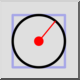
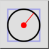
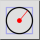
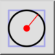

Centrum, Radie
Verktygsfält / ikon:
 

Meny: Rita > Cirkel > Centrum, Radie
Genväg: C, R
Kommandon: circlecr | cr
Detta är en automatisk översättning.
Verktygsfält / ikon:
 

Meny: Rita > Cirkel > Centrum, Radie
Genväg: C, R
Kommandon: circlecr | cr
Med det här verktyget kan du skapa cirklar med ett givet centrum och en given radie.